ggplot2
University of Münster
2025-10-16
Goals
- An introduction to the Grammar of Graphics
- An introduction to ggplot
ggplot2
- ggplot2 is an R package for visualizing data.
- It is part of the tidyverse
- It is based on a concept called The Grammar of Graphics by Leland Wilkinson
- It has been programmed and implemented as an R package by Hadley Wickham.
- There is a book available on ggplot2
- Which you find at https://ggplot2-book.org/ as an online book.
ggplot components

Basic concepts of ggplot2
A ggplot graphic has at least three key components:
- data
- A set of aesthetic mappings between variables in the data and visual properties (x and y axis, colour, dotsize etc.)
- At least one geometries layer which describes how to render each observation (lines, point, bars etc.). Layers are usually created with a geom function
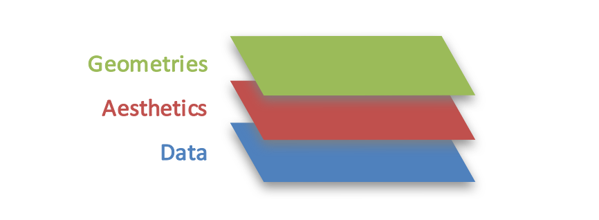
Task
- Copy and execute these lines:
displdisplacement byhwyhighway miles per gallon
:-)

Task
- Copy and execute these lines:
- Axis:
displdisplacement andhwyhighway miles per gallon - Colour:
drvf = front-wheel drive, r = rear wheel drive, 4 = 4wd - Size:
cylnumber of cylinders
:-)
The ggplot() function
The main function is ggplot(). It takes two arguments:
data: A data framemapping: Aesthetic mappings provided with theaes()function.
Additional layers are added with a + sign.
Task
- Take the
mpgdata frame. - Plot a graph with …
ctyandhwydisplayed on the axis and- the colour is mapped on the variable
classand - the shape (
shape = drv) is mapped on the variabledrv.
- Use the
geom_point()layer.
:-)
Fixed aestetics
- Aestetics can also be provided in the
geomfunction. - Here they are not mapped to variables but fixed.
Some geoms
geom_point(): Dots for each data point.geom_line(): Lines connecting each x-axis data pointgeom_bar(): Barsgeom_text(): Text at x and y positionsgeom_smooth(): Smoothed conditional means
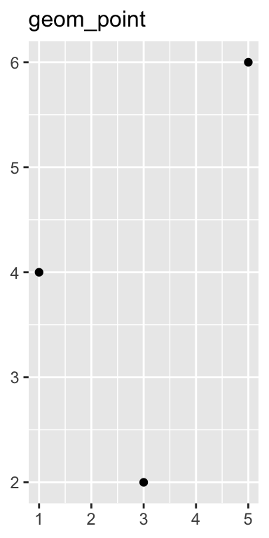
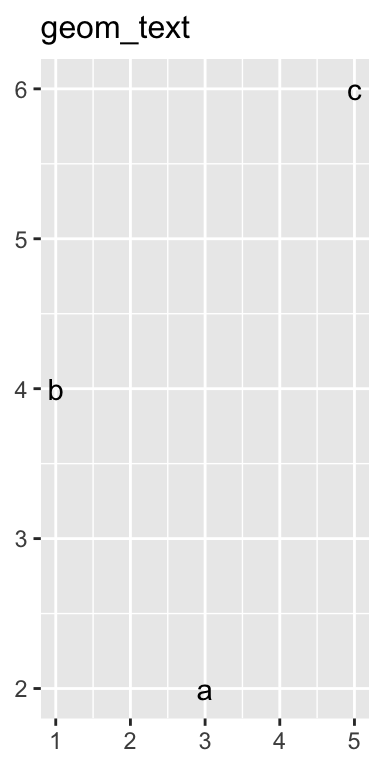
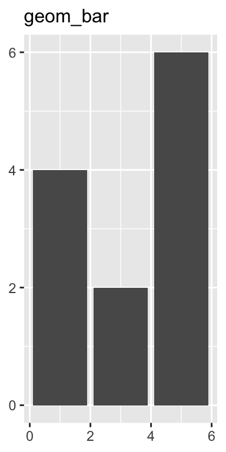
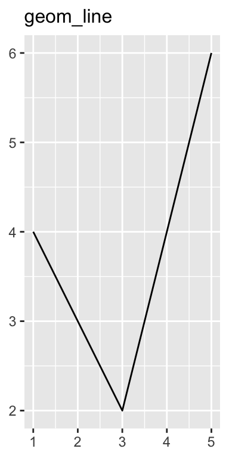
Task
- Take the
economicsdata frame - Create a lineplot for
dateandunemployment. (geom_line()) - Add a second layer for red dots of size = 1 (
geom_point())
:-)
geom_bar()
geom_bar()draws bars- By default, it counts the numbers of entities of categories provided as the
xvariable
Task
- Take the
mpgdata frame. - Create a barplot with the counts of categories for the
drvvariable. - Colour the bars
redwith thefillargument. - Set the argument
width = 0.8to resize the bar width.
:-)
geom_col()
- With the
geom_col()function, bar heights and bar categories are taken from the x and y variables:
Example
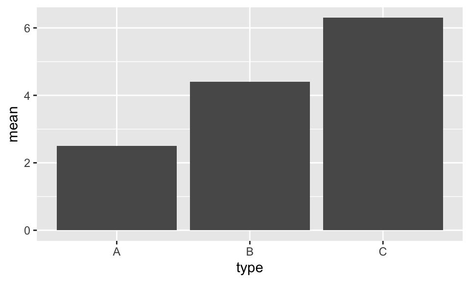Task
- Take the
starwarsdatabase. - Calculate the bmi.
- Filter all
bmi < 100. - Summarise the median of the bmi grouped by species.
- Create a fitting barplot.
- Add the following layer. Otherwise the x-labels will overlap:
Hint:
:-)
geom_smooth()
geom_smooth() is used to add smoothed conditional means in scatterplots.
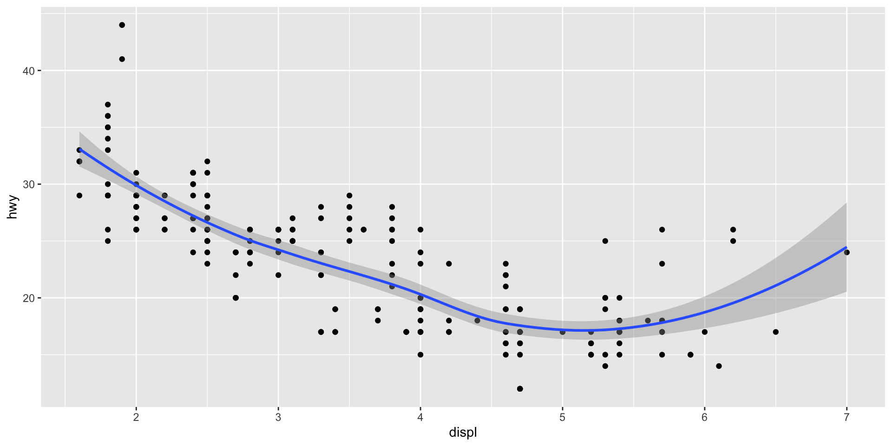Task
- Take the
economicsdata frame. - Create a scatterplot with number of unemployed
unemployby populationpop. - Add a
geom_smoothlayer.
:-)
Task
- Install and activate the library
dslabs. - Take the dataframe
gapminder. - Group the data by
yearandcontinent. - Use the
summarize()function to calculate the mean ofinfant_mortality. - Create a line and dot plot with
yearon x-axis, mean ofinfant_mortalityon y-axis, andcontinentas line/dot colours. - Add a
smoothlayer.
Hint: group_by(year, continent)
:-)
Distributions of multiple datapoints in categories
When you have multiple values ordered in a categorical variable simple plots become messy:
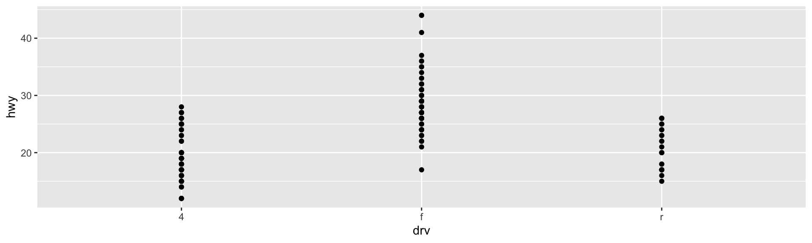Distributions of multiple datapoints in categories (2)
Solutions
geom_jitter(): Adds a litle random jitter to each datapointgeom_boxplot(): Draws a boxplotgeom_violin(): Draws a violine plot
Task
- Take the
mgpdataset - Create the following plots for the variables x = drv and y = hwy
- geom_jitter()
- geom_boxplot()
- geom_violin()
:-)
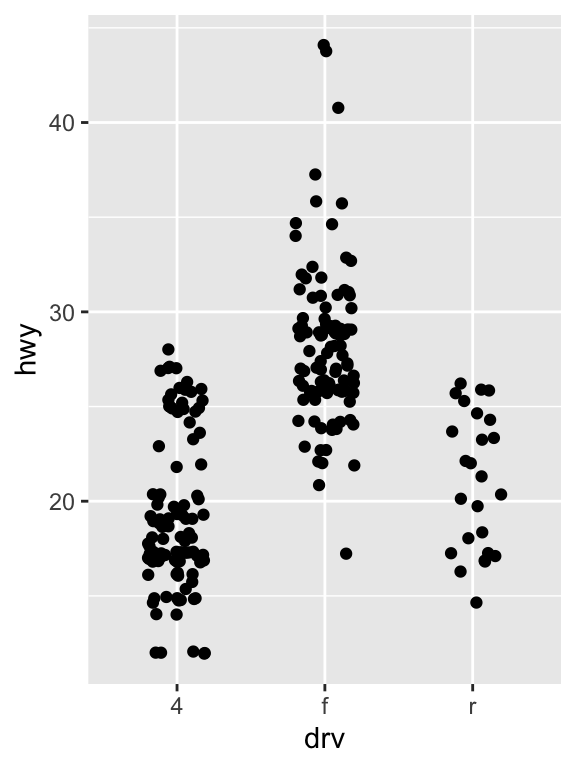
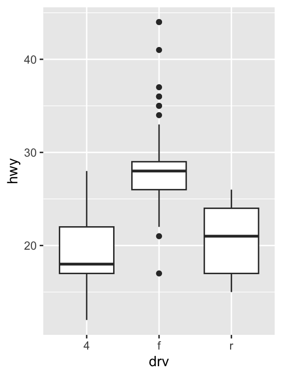
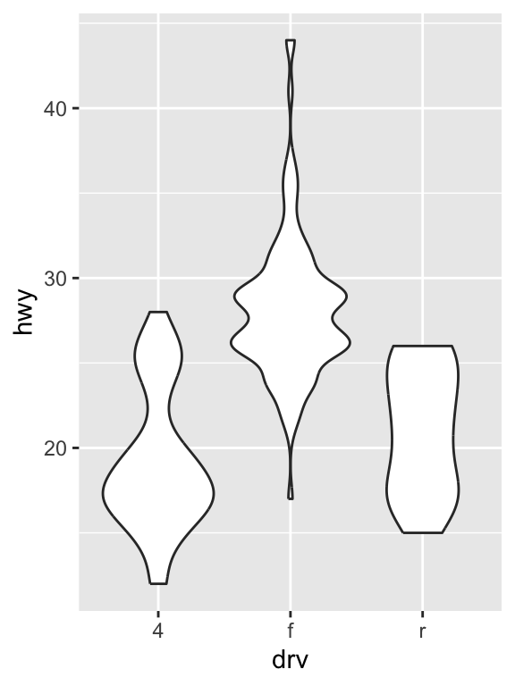
Further layers
- Add a title: ggtitle() ( e.g. ggtitle(“My first plot”) )
- Change axis labels: labs(x = NULL, y = NULL) (e.g. labs(x = “Categories”, y = “Mean”))
- Change axis scales: ylim(min = 0, max = 10) ; xlim(min = 0, max = 10)
Task
Facets
Facets are another basic aesthetics. A plot is organizes multiple times by a categorical variable:
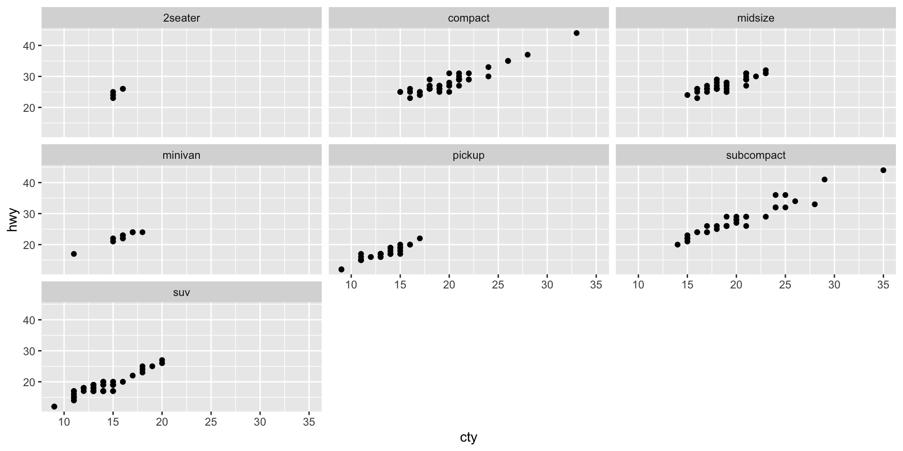
Task
- Take the economics dataset
- Create a new Variable
yearby extracting the year from thedatevariable. - Turn the saving rate variable
psavertin to a categorical variablesaving_ratewith three levels - Plot year by unemployment rate with facets for
saving_rate.
Hint1: year = format(date, format = "%Y")
Hint2: saving_rate = cut(psavert, breaks = 3, labels = c("Low","Medium","High"))
Hint3: unemployment rate: unemploy / pop * 100
:-)
A complex example
Code for this example
Jürgen Wilbert - Introduction to R